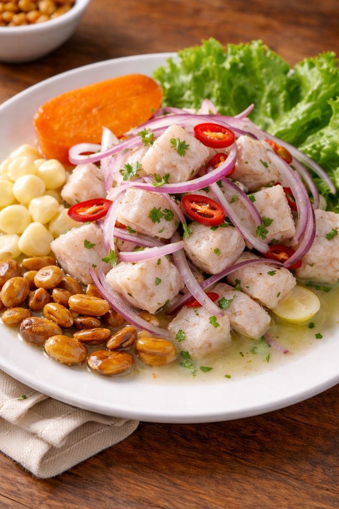

Lomo saltado
Tiras de carne salteada con cebolla, tomate y salsa de soja, acompañadas de papas fritas y arroz con un toque de Cilantro.
Tiras de carne salteada con cebolla, tomate y salsa de soja, acompañadas de papas fritas y arroz con un toque de Cilantro.

Arroz salteado al wok con vegetales, pollo, salsa de hostion, kiom, huevo y salsa de soja.

Delicioso plato tradicional peruano, preparado con pollo desmenuzado en una cremosa salsa de ají amarillo, leche, queso y un toque de nuez. Servido con arroz blanco, papas y huevo duro, combina suavidad, sabor y tradición en cada bocado.

Plato emblemático de la gastronomía peruana, elaborado con pescado fresco marinado en jugo de limón, acompañado de cebolla, ají y cilantro. Servido con camote y maíz chulpe.

Deliciosa combinación de mariscos frescos, como camarones, calamares y pescado, rebozados y fritos hasta obtener una textura crujiente. Servido con salsa tártara y aji de la casa, con ensalada fresca y papas fritas.
.jpg)
Crujiente por fuera y jugoso por dentro, nuestro pollo broaster se prepara con una mezcla especial de especias y un empanizado dorado e irresistible. ¡Todo el sabor y la tradición peruana en cada bocado! 🇵🇪